1. 01-calm-today
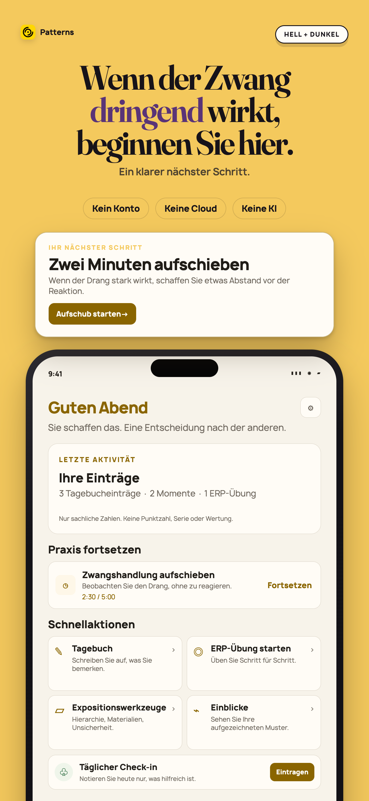
Apple 1290×2796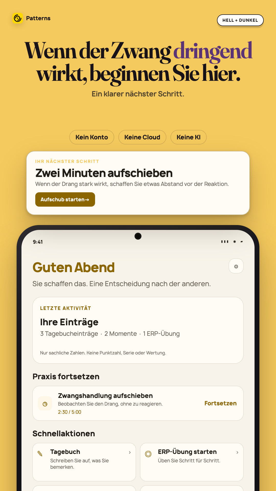
Play 1080×1920Patterns Heute mit sachlichen Aktivitätszahlen und einer zweiminütigen Zwangsaufschub-Aktion.
2. 02-delay-the-urge
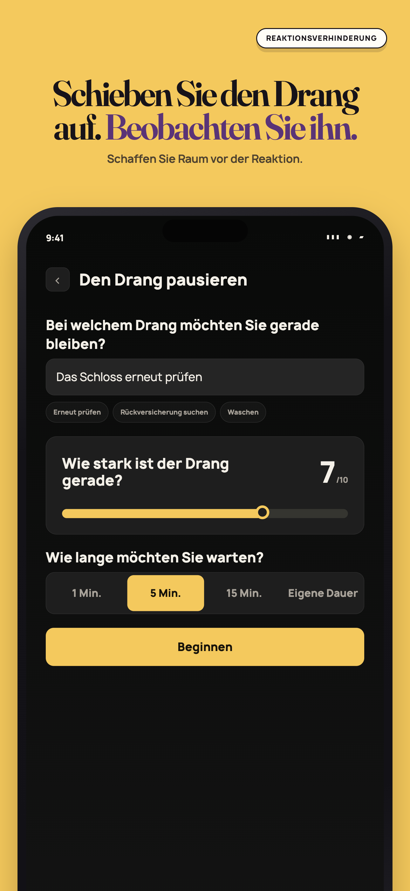
Apple 1290×2796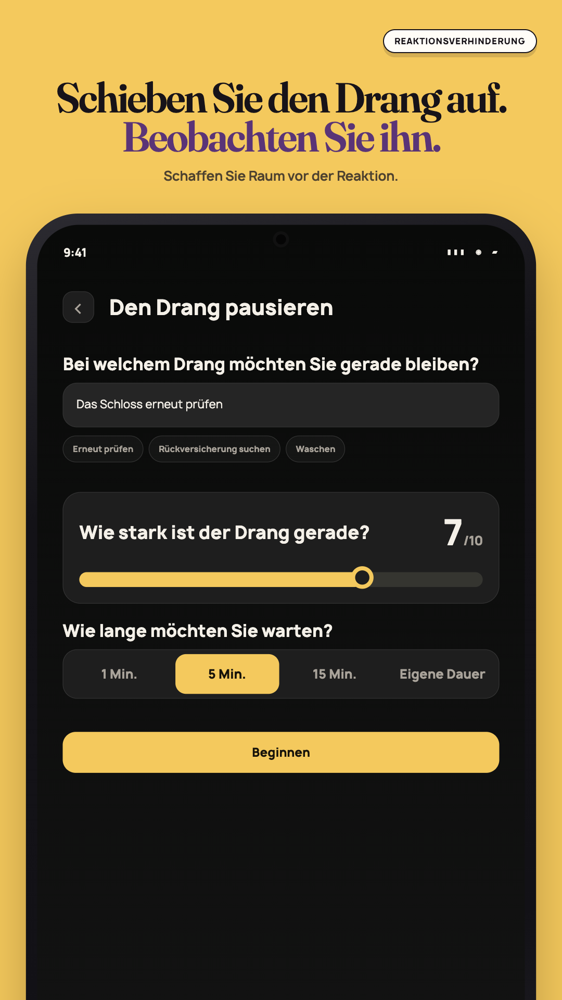
Play 1080×1920Zwangsaufschub mit Beschreibung, selbst erfasster Intensität und gewählter Wartezeit.
3. 03-build-your-exposure-ladder
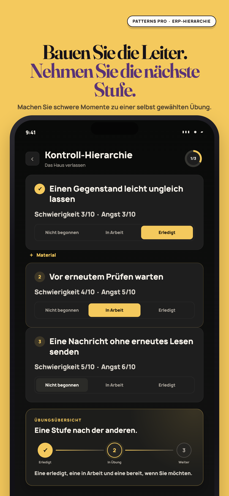
Apple 1290×2796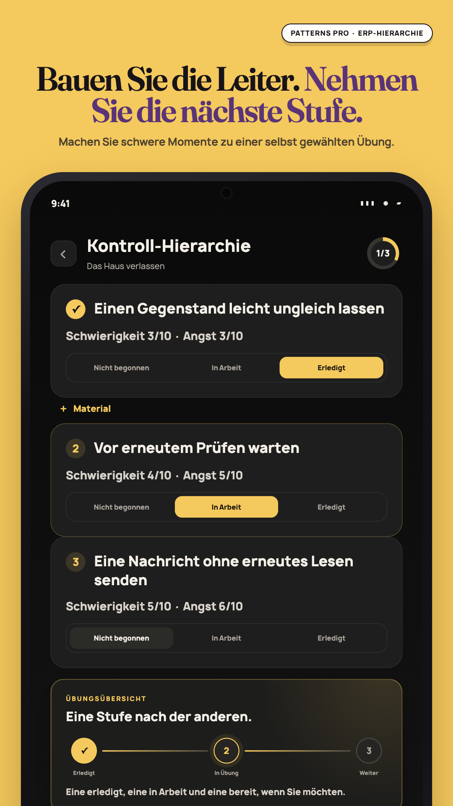
Play 1080×1920Expositionshierarchie mit drei eigenen Stufen und Textbezeichnungen für jeden Übungsstatus.
4. 04-see-patterns-not-judgments
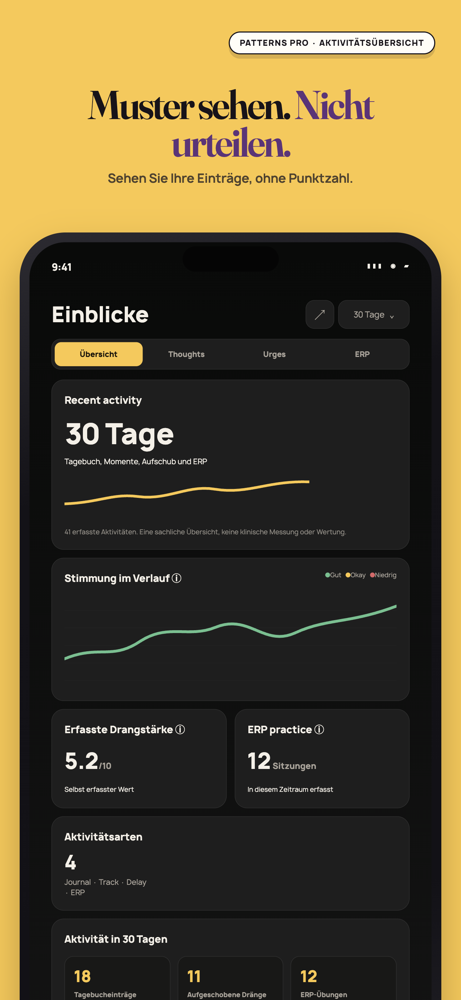
Apple 1290×2796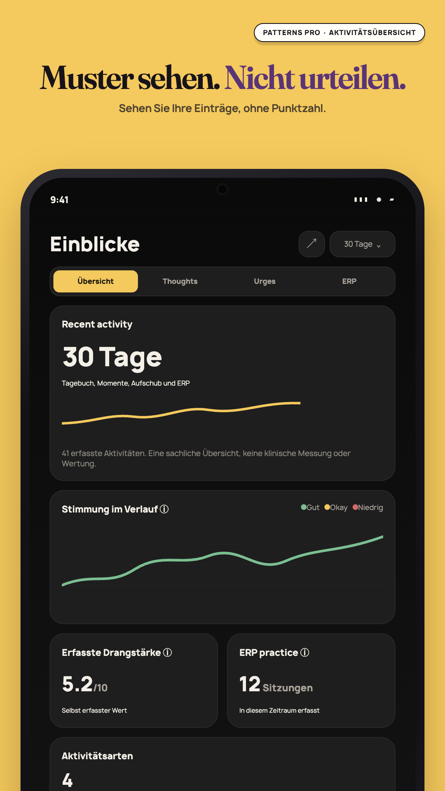
Play 1080×1920Ruhige Einblicke mit sachlichen Zahlen für Tagebuch, Aufschub und ERP ohne Punktzahl oder Serie.
5. 05-no-ai-to-ask
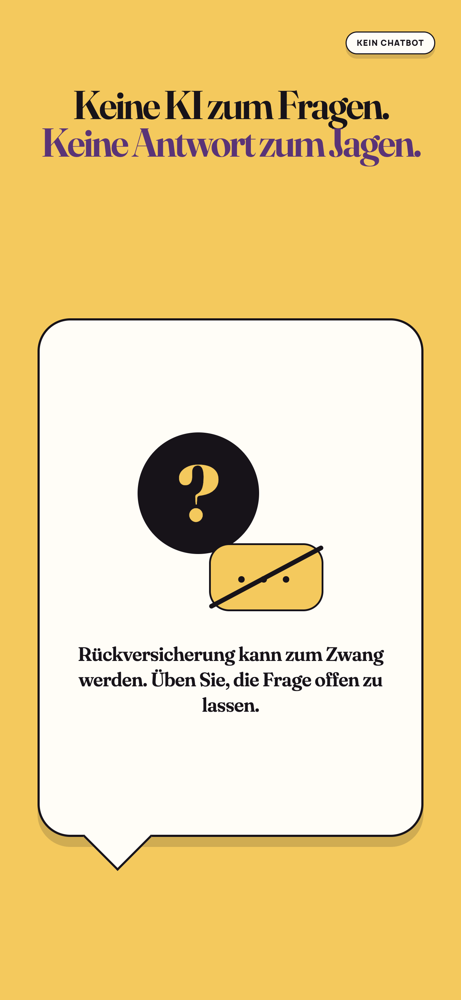
Apple 1290×2796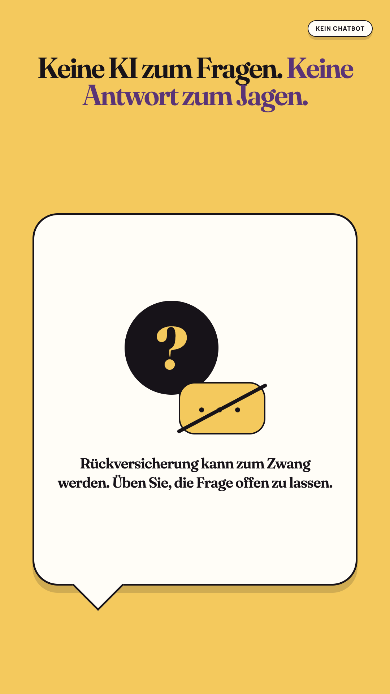
Play 1080×1920Hinweis, dass Patterns keinen Chatbot für sofortige Rückversicherung anbietet.
6. 06-nothing-leaves-your-phone
Apple 1290×2796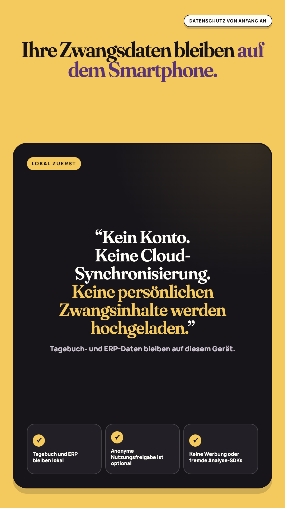
Play 1080×1920 Datenschutzkarte: Tagebuch- und ERP-Daten bleiben ohne manuellen Export auf dem Gerät.
7. 07-private-journaling
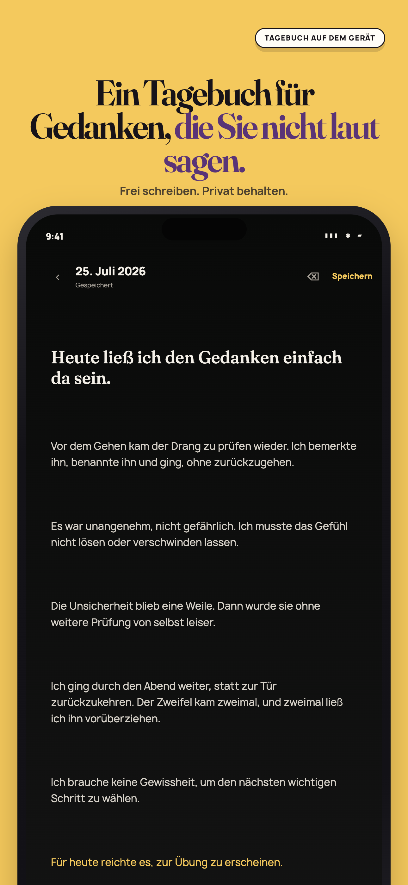
Apple 1290×2796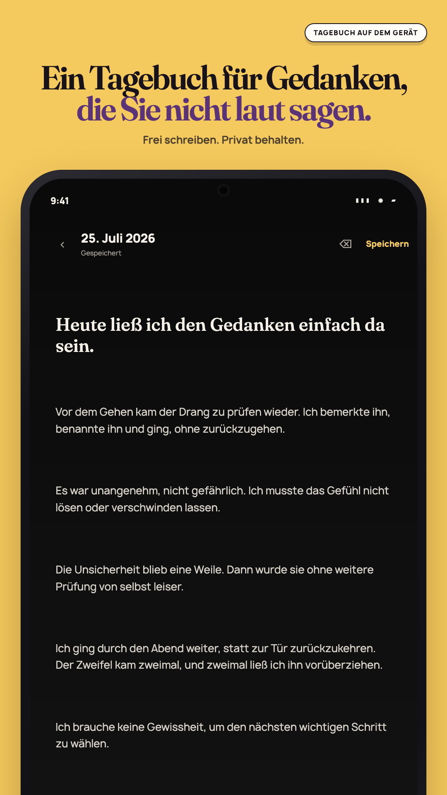
Play 1080×1920Privater Tagebucheditor auf dem Gerät mit Speicherstatus und Formatierungssteuerung.
8. 08-patterns-pro
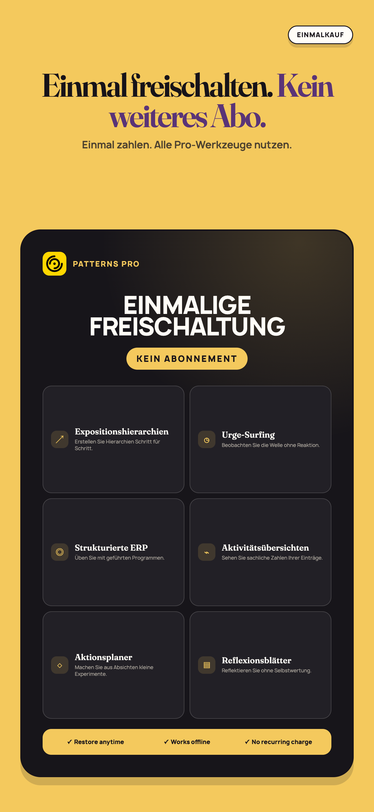
Apple 1290×2796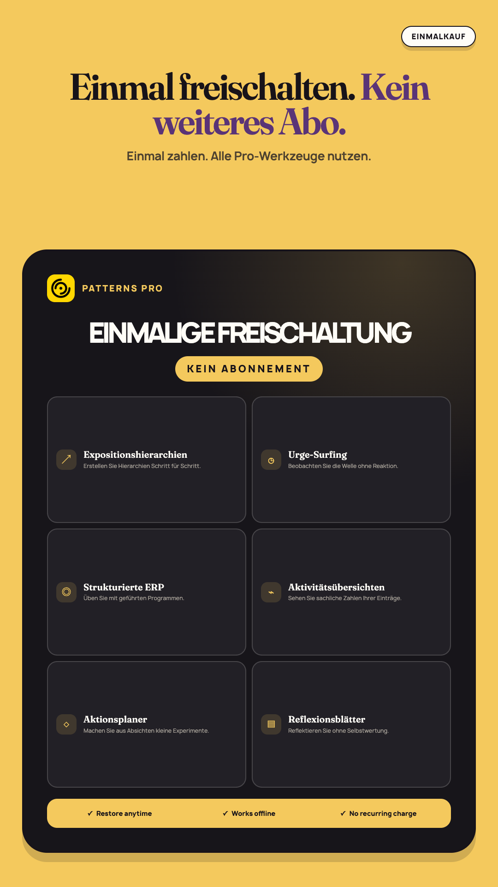
Play 1080×1920Patterns Pro als Einmalkauf mit enthaltenen Werkzeugen für Selbsthilfe und Reflexion.
Google Play feature graphic
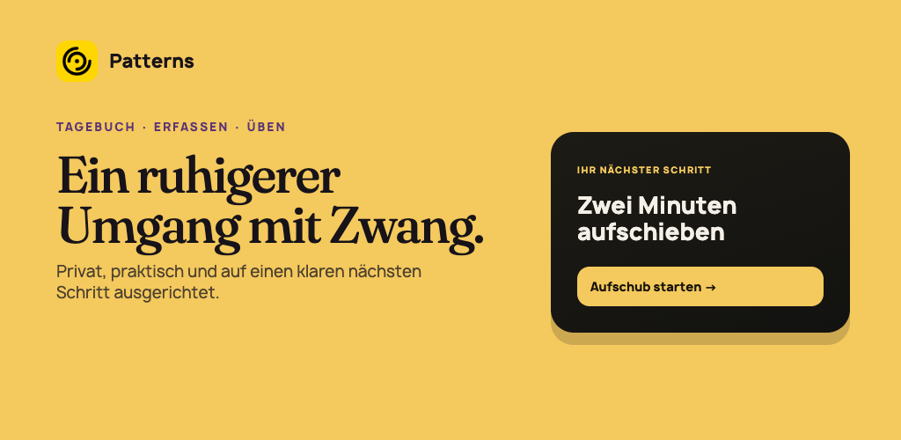
Play 1024×500Ein ruhigerer Umgang mit Zwang. Privat, praktisch und auf einen klaren nächsten Schritt ausgerichtet.